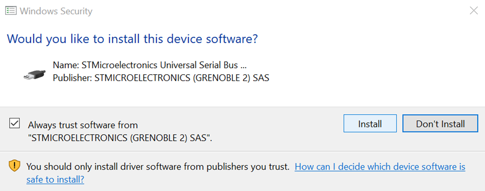

STM32H735G Discovery Kit Setup Guide¶
This guide will walk you through the steps needed to install the STM32CubeIDE software, import the starter code, and program the board.
STM32CubeIDE installation¶
The easiest way to program the discovery board is with the STM32CubeIDE Software.
The software is free and available on Windows, Mac OS, and Linux, but you will need to either register an account with ST of provide your email to access it.
When installing, make sure to install the suggested components: SEGGER J-Link drivers and ST-Link Drivers.

Your operating system may prompt you for additional permission when installing the drivers with a prompt similar to the one below. Make sure you allow the installation.

When you run the program for the first time, you will be prompted to select a workspace. Make sure you note the location of your workspace. This is where your projects for the lab assignments will reside. The default location is <user>/STM32CubeIDE/workspace_<version>, but feel free to choose a more convenient location since you will access it often for the lab exercises.
Importing the starter code¶
We have provided a project that contains all of the starter code necessary to complete the lab exercises. With it, we have included a short MATLAB script that will help you import the code to the IDE for each lab while avoiding naming conflicts.
If you do not already have a working installation of MATLAB, follow the instructions on the course webpage.
Download the zip file containing the starter code and setup script and store them in a convenient location.
In MATLAB, navigate to the folder containing the setup script. You can either use the ‘Current Folder’ menu in the MATLAB GUI or change directory with ```cd
/445S_lab_files’. Run the lab_setup.m script by typing
lab_setupin the command window or by opening the file in the MATLAB editor and clicking the run icon (F5).Follow the on-screen instructions to create a new project. Make sure to choose a name for your project that does not conflict with an existing project in your workspace.
Open the STM32CubeIDE and import the extracted project by clicking File -> Import. Under the ‘General’ category, choose ‘existing projects into workspace.’ Select the folder you just extracted as the root directory and click finish.
Running the project on the discovery board¶
Once the project is imported, select it as the active project by double clicking it.
Connect the board with a micro USB cable to your computer. There are two micro USB ports on the board. Use the one labeled ‘CN15 STLINK’.
The project can now be compiled and run normally  or in debug
or in debug  mode by clicking the icon at the top.
mode by clicking the icon at the top.
Running in debug mode¶
Running in debug mode will allow you to place breakpoints, examine the processor’s memory, and make timing measurements.
Click the debug (
) icon in the top menu bar.The first time you debug the program, you will be prompted to modify the settings. No changes are necessary, so click ‘OK.’
The first time you program the board, you may be prompted to update the firmware. Follow the instructions and then proceed.
The program will compile and load to the board. When it is complete you should see ‘download verified successfully’ printed in the console, and first line of the program will be highlighted, indicating that execution is paused on this line.
Press F8 (or the resume icon) to continue the program’s execution. Note that the and the run
icons look similar, but perform different actions.
For more information on the behavior of the starter code, refer to the Lab 1 page.